Chapter 5 평균 검정
평균의 검정이란 일정한 기준(임계값)에서 평균에 대한 가설을 채택할 것인가 혹은 기각할 것인가를 결정하는 절차이다. 가설이란 모집단의 특성을 잠정적으로 기술한 것으로 이것을 검정하는 절차가 가설검정이다. 통계적 추론의 목적은 표본에서 얻어진 정보를 근거로 하여 모수에 대하여 유추하는 데 있다. 가설검정은 모수를 유추하는 방법이다.
가설검정은 크게 단일 표본문제와 두 표본문제로 나눌 수 있다.
단일표본은 하나의 모집단에서 추출된 하나의 표본에 대해서 검정하는 것이다.
두 표본의 평균차이에 대한 가설검정은 독립적인 두 모집단으로 부터 각각 추출된 두 표본의 경우와 동일한 모집단으로부터 추출된 두 표본의 경우로 나눌 수 있다.
두 표본의 비교문제는 학문적인 연구나 일상생활에서의 단일 표본문제보다 더 많이 사용되는데,
두 종류의 산업에서 기업들의 평균 성장률이나 임금의 차이를 비교
광고를 하기 전과 한 후의 고객들의 반응을 비교
식이요법 전후의 체중을 비교하여 식이요법효과를 분석하는 문제 등으로 나타낼 수 있다.
5.1 단일표본
단일표본의 추론은 모분산 ^2$을 아는 경우와 모르는 경우로 구분한다. 여기서 신뢰구간을 이용하여 설명하는데, 신뢰구간이란 일정한 확률범위 내에 모수가 포함될 가능성이 있는 구간을 뜻한다.
① \(\sigma^2\)을 아는 경우: \(\mu \in \bar{X} \pm Z_{\alpha/2}\times \frac{\sigma}{\sqrt{n}}\)
② \(\sigma^2\)을 모르는 경우: \(\mu \in \bar{X} \pm Z_{\alpha/2}\times \frac{S}{\sqrt{n}}\)
③ \(\sigma^2\)을 모르고, 소표본인 경우(모집단 정규분포 가정): \(\mu \in \bar{X} \pm t_{n-1,\alpha/2}\times \frac{S}{\sqrt{n}}\)
단일 표본의 평균에 관한 검정을 설명하기 위하여, time(시간)에 대한 것을 예로 들어보자. 연구자가 응답자의 주당 평균 사교육 시간이 9시간인지 여부를 검정하려면, 다음과 같은 가설을 세운다.
\[ H_0:\mu_1=9, \quad H_1:\mu_1 \ne 9 \]
이 가설을 검정하려면, 다음과 같은 절차를 시행하면 된다.
분석(A)
평균 비교(M)
일표본 T 검정(S)일표본 T-검정을 위한 화면을 선택하면 다음과 같다. 이 검정화면에서 오른쪽에 T 검정변수 상자에 time(사교육시간)을 선택하고,검정값(Test Value)에 ‘9’를 입력한다.
옵션(Options)에서는 디폴트로 95%의 신뢰구간을 나타내고 자세한 사항은 다음과 같다.
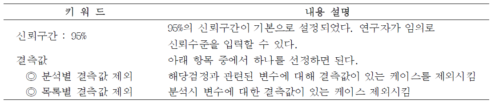
[결과]
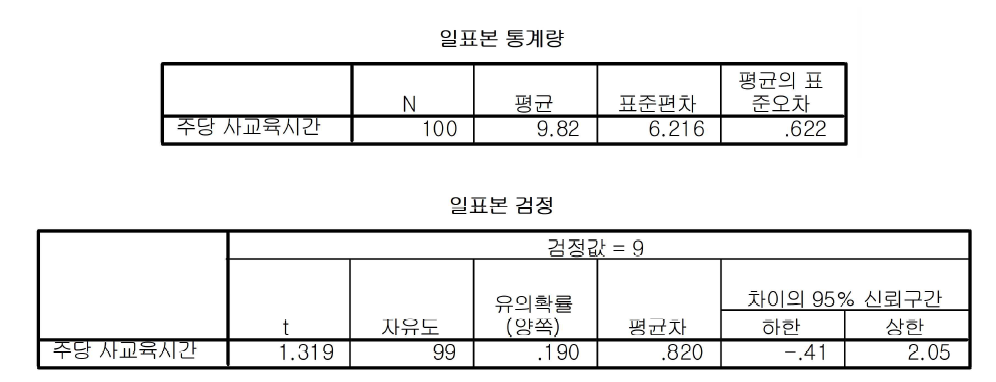
유의확률(양쪽)이 0.190이고 이 값은 유의수준 0.05보다 크므로, 귀무가설은 채택된다(기각되지 않는다). 따라서 표본 응답자의 주당 평균 사교육 시간은 9시간이라고 할 수 있다. 그리고 귀무가설의 수치(9시간)와 표본평균(9.82시간) 간의 차이에 대한 95% 신뢰구간을 살펴보면, [-0.41 ~ 2.05]가 된다. 이 신뢰구간이 0값을 포함하고 있으므로 귀무가설 채택을 지지하게 된다.
모든 통계적 검정방법과 마찬가지로, T-검정은 귀무가설이 옳다는 가정 하에 두 모집단으로부터 추출된 표본들로부터 검정통계량에 근거하여 귀무가설을 부정할 만한 상당한 근거를 보이면 귀무가설을 기각하고, 그렇지 않은 경우에는 귀무가설을 받아들이게 된다.
두 표본에 대한 검정절차를 살펴보면, 귀무가설 하에서 두 모집단의 표본평균(sample mean)간의 차이는 표본오차(sample error)에서 기인한 것이라고 간주한다. 즉, 두 표본평균간의 차이가 표본을 잘못 추출한 데서 비롯된 것이라고 가정한다. 그런 후 T-검정통계량을 계산하여 두 표본평균간의 차이가 귀무가설 하에 있을 확률, 즉, 표본오차로 인해 차이가 발생할 확률(유의확률 ; -값)을 계산한다.
만약 계산된 확률이 귀무가설을 기각하기로 설정한 유의수준(일반적으로 5%)과 같거나 작다면 귀무가설을 기각하고 대립가설을 채택하게 된다.
T-검정은 두 모집단의 독립여부에 따라 “독립 2표본 T-검정”과 “대응 2표본 T-검정”으로 나눌 수 있다.5.2 독립적인 두 표본 문제
독립적인 두 표본의 T-검정 대화상자를 열기 위해서
분석(A)
평균 비교(M)
독립표본 T 검정(T)여기에서 성별(gender)에 따른 연간 사교육비(total)의 차이를 분석하고자 한다.
변수 상자에서 검정할 변수 total(년 평균 사교육비)을 선정하여, 오른쪽 검정변수(Test Variable)란에 저장하고, 집단변수(Grouping Variable)란에 명목척도인 gender(성별)를 지정하 였다.
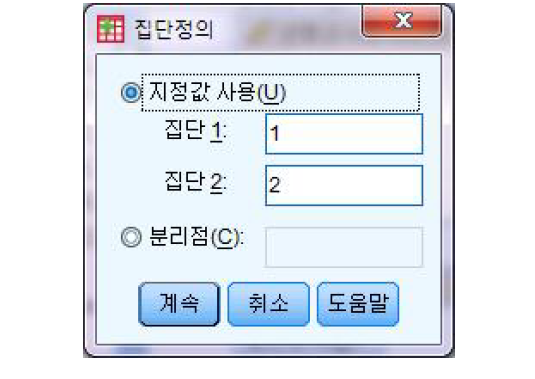
집단변수를 정의하기 위해 [집단정의(D)] 단추를 선택하면, Group : 1과 Group : 2를 지정할 수 있다. 즉, 두 개의 비교집단으로 한정한다.
만일 변수들이 두 집단 이하이면 실행되지 않는다. gender(성별)을 정의한 값으로 Group : 1에는 1(남자), Group : 2에는 2(여자)를 입력하면 되고, 집단정의 창의 키워드는 다음과 같다.
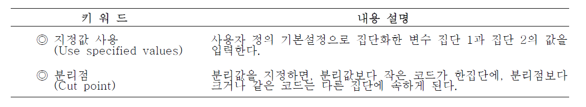
[결과]
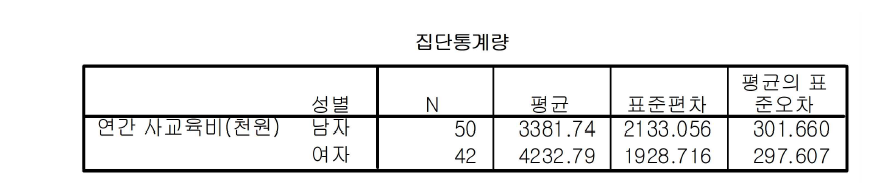
집단 통계량의 결과
남자 : 표본수 50명, 평균 3381.74, 표준편차 2133.056, 평균의 표준오차 301.660
여자 : 표본수 42명, 평균 4232.79, 표준편차 1928.716, 평균의 표준오차 297.607
gender(성별)의 1집단, 연간 사교육비는 남자 1850명, 연간 사교육비의 평균은 3381.74이며 표준편차는 2133.056이고 표준오차는 301.660이다. 여기서 표준오차는 표준편차를 관찰개수의 제곱근, 즉 으로 나눈 값이다. 여자도 동일하게 설명된다.
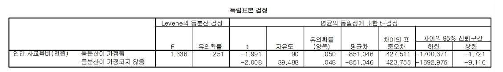
[Levene 등분산 검정 : F=1.336, 유의확률 : 0.251]
독립표본 T-검정을 위해서는 먼저, 두 집단의 분산의 동질성 가정을 검정하여야 한다. 이러한 분산의 동질성 여부는 Levene의 검정, 즉 F 값을 이용한다.
\[ H_0:\sigma^2_1=\sigma_2^2, \quad H_1:\sigma^2_1 \ne \sigma_2^2 \]
F값이 1.336이고 유의확률 = 0.251>0.05이므로 두 모집단의 분산이 동일하다는 귀무가설이 기각하지 못하게 되어, 등분산 가정 하에서 T-검정을 실시한다.
[평균차이 : -851.046] 제시된 통계량에서 남자의 연간 사교육비의 평균과 여자의 연간 사교육의 평균 차이는 -851.046(-1700.371, -1.721)이다. 유의확률(양쪽) = 0.05 0.05이므로, 아래의 귀무가설은 기각된다.
\[ H_0:\mu_1-\mu_2=0, \quad H_1:\mu_1-\mu_2 \ne 0 \]
따라서, 남자와 여자간의 연간 사교육비의 평균 차이 -851.046은 통계적으로 유의하다. 그리고 이 평균차이의 95% 신뢰구간을 계산하면 [-1700.371, -1.721]이다. 신뢰구간이 0을 포함하고 있지 않으므로 귀무가설이 기각됨을 알 수 있다.
5.3 대응 표본 문제
- 광고효과를 통한 매출액 차이를 검정
- 판매실험에 사용한 시약의 효과를 검사
- 다이어트 프로그램의 효과 검사
- 교육훈련의 효과를 조사이런 경우에 대해서는 앞의 독립적인 두 표본 검정을 할 수 없다. 이러한 경우를 대응 표본이라 하며 대응표본 T-검정(Paired samples t-test)을 사용한다.
어느 회사는 자사가 개발한 한 달간 식이요법 프로그램이 효과가 있는지 여부를 분석하기로 하였다. 식이요법 프로그램에 참가한 10명의 몸무게가 다음과 같다고 하였을 때, 이 식이요법은 효과가 있다고 할 수 있는가?
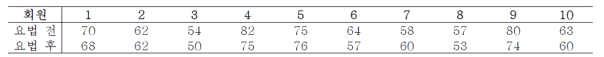
분석에 앞서 케이스 수가 겨우 10으로 매우 작다. 따라서 정규성 검정이 필요하다. 대응표본 T-검정에서 정규성 검정을 하기 위해 요법 전후의 차이를 새로운 변수로 만들어야 한다.
변환(T)
변수계산(C)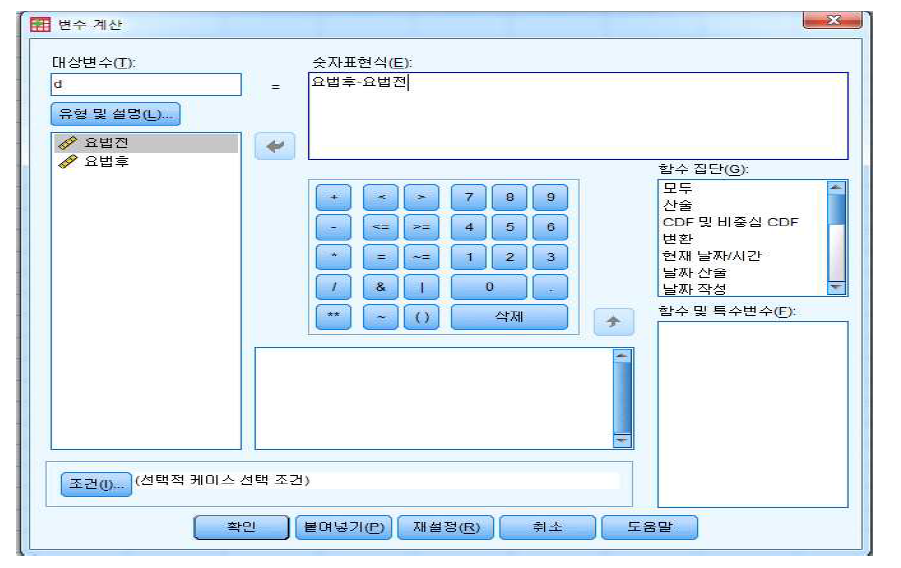
새로운 변수(요법 전후의 차이)에 대한 정규성 검정을 분석 메뉴의 데이터 탐색을 선택하여 실행한다.
분석(A)
기술통계량(E)
데이터 탐색(E)
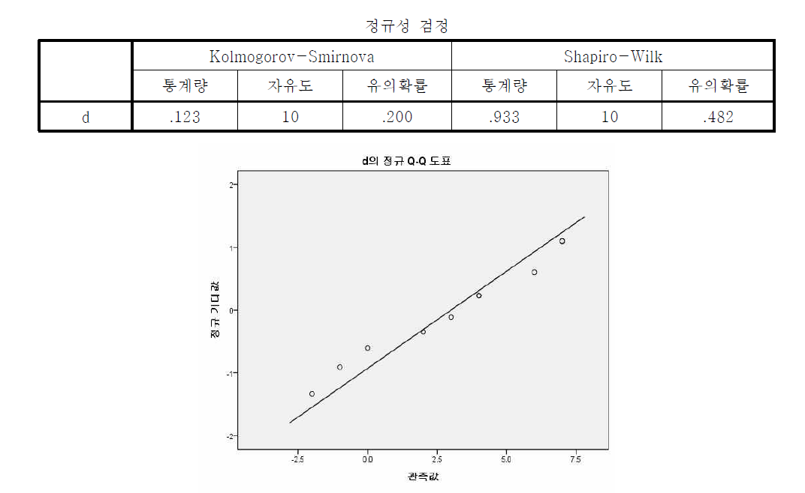
요번 전후의 차이인 ‘d’변수에 대한 Shapiro-Wilk 정규성 검정에서 유의확률이 0.482로 유의수준 0.05보다 크기 때문에 모집단의 분포는 정규분포를 따른다고 볼 수 있다. 또한 정규 Q-Q도표를 보면 점들이 직선으로부터 약간 벗어나 있는 듯 보이지만 정규분포의 가정에 무리가 없는 것으로 판단된다. 정규성을 만족하지 않는 경우 비모수적 방법인 윌콕슨 부호순위(Wilcoxon signed-rank) 검정을 사용해야 하나 본 강의에서 다루지 않는다.
동일모집단의 두 표본의 T-검정 대화상자를 열기 위해서
분석(A)
평균 비교(M)
대응표본 T 검정(P)
변수상자에서 분석하려는 변수 쌍(before, after)를 선택하면 현재선택(Current Selections)에
Variable 1 : after
Variable 2 : before
가 나타난다. 이 둘을 선택하면 오른쪽 대응변수(Paired Variable)란에 `after-before’가 나타난다.
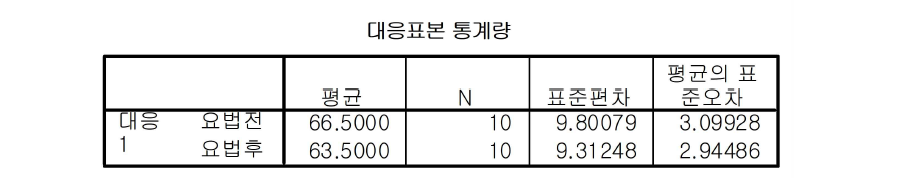
대응표본 통계량(Paired Samples Statistics)을 살펴보면, 식이요법 이전의 평균 몸무게가 66.5Kg이고, 식이요법 이후의 평균 몸무게가 63.5Kg으로 약 3Kg 정도 감소한 것을 알 수 있다.
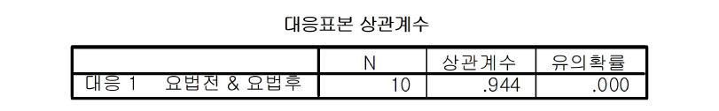
대응표본 상관계수(Paired Samples Correlations)는 0.944로 매우 강한 상관을 보이고 있다.
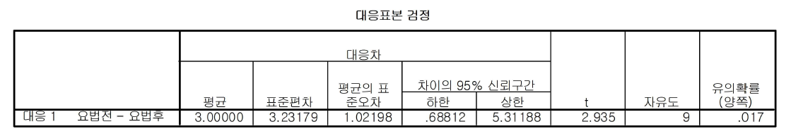
식이요법 이전의 평균몸무게와 이후의 평균몸무게의 차이가 3Kg(66.50-63.50)이며 표준편차는 3.23Kg, 표준오차는 1.02이다. 이 평균차이의 95% 신뢰구간은 [0.69, 5.31]이며, 이것은 0을 포함하고 있지 않으므로 식이요법의 효과는 있다라고 할 수 있다. 그리고 T-검정을 하여보면 유의확률은 0.017 < 0.05 이므로, 유의수준 0.05에서 두 집단간의 평균차이는 유의하다라고 할 수 있다. 따라서 식이요법 프로그램은 효과가 있다고 결론을 내릴 수 있다.
※ 두 종류의 치료법을 개발하여 환자를 두 집단으로 나누어 실험을 하였다. 이 경우, 한 치료법을 받은 환자그룹의 평균치가 다른 치료법을 받은 환자그룹보다 높아서 전자의 효과가 좋다고 하자. 그러나 전자의 집단이 후자의 집단보다 더 젊거나 건강하다면 두 치료법의 효과는 명확히 판단할 수 없다. 이 경우에는 나이와 건강상태가 나은 두 사람을 한 쌍으로 하여 실험하여야 한다. 이렇게 하여 여러 쌍에 대하여 실험을 계속하면, 치료효과를 제외한 나이나 건강과 같은 외생효과를 제거할 수 있다.